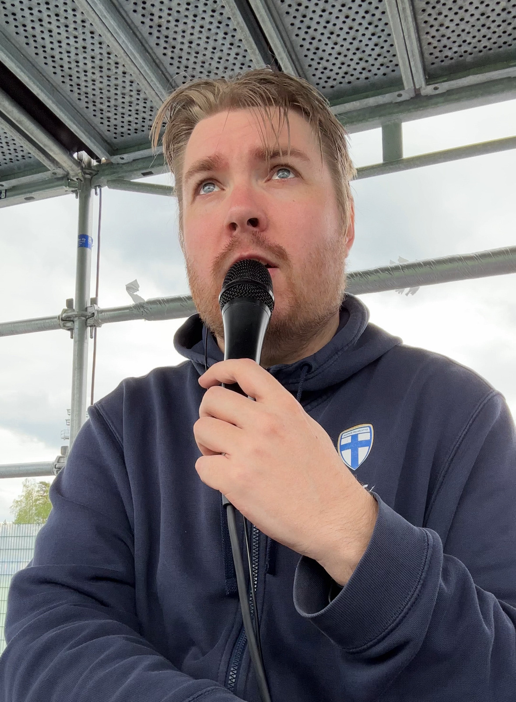

Täältä se kuuluttajan ura alkoi. Tässä Hettarin kuuluttamo, eli
Muumitalo.


Täällä tulee nykyisin eniten kuulutettua pelejä. Täällä pelataan
eniten nuorisomaaotteluita ja olen lähes aina paikalla.



Töölön jalkapallostadion, eli Bolt Arena. Täällä olen päässyt
kahdesti kuuluttanaan pelejä.
Järvenpään keskuskenttä. Täällä päässyt yhden tapahtuman
kuuluttamaan.
Myrtsin stadion. Täällä muutama turnaus.
Talin halli tuossa naapurissa.
Täällä pääsin kerran kuuluttamaan Roots- ja Regions Cuppien
finaalit. Ja olin myös UEFA Super Cupin hätäkuuluttaja, mutta
onneksi ei tarvinnut kuulutella.
Markku.fi Areena Oulunkylässä.